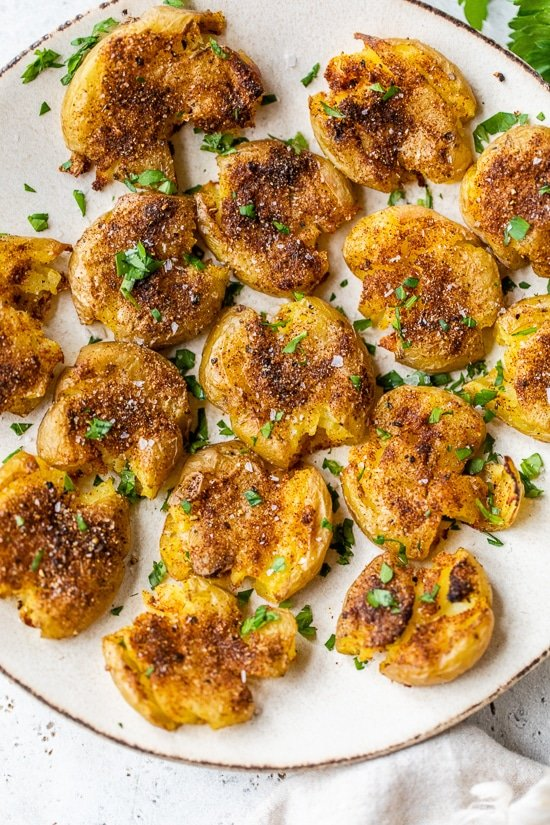

Paprika Smashed Potatoes

These smashed potatoes, seasoned with paprika, garlic powder, and black pepper, are tender on the inside and crisp on the outside – a delicious side dish for any meal.
Ingredients
- 16 ounces baby gold potatoes, about 12 - 16 depending on the size
- kosher salt
- 3/4 teaspoon sweet paprika
- 1/2 teaspoon freshly ground black pepper
- 1/4 teaspoon garlic powder
- 1 teaspoon extra virgin olive oil
- Reynolds wrap heavy duty foil
- chopped parsley, for garnish
Steps
- Place the potatoes in a medium pot and cover with cold water, add 1 teaspoon kosher salt. Bring to a boil and cook until a knife easily pierces to the center of each potato, about 18 - 20 minutes. Remove from water and dry, place on a clean work surface and gently press using the bottom of a glass to smash the potato.
- Preheat the oven to 425F. Line a sheet pan with foil.
- In a small bowl combine paprika, 1/2 teaspoon salt, black pepper and garlic powder. Place potatoes in a single layer on the prepared sheet pan. Lightly brush potatoes with oil and sprinkle both sides of each potato with spice mix.
- Bake 20 minutes, turning halfway until crisp and golden. Garnish with parsley.